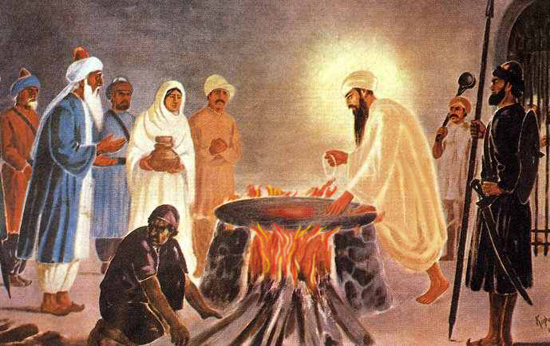

Dhan Guru Arjan Dev Ji

On 16 June 1606, the Mughal Emperor Jahangir ordered that Guru Arjan Dev Ji, the fifth Sikh Guru be tortured and sentenced to death after the Guru had refused to stop preaching his message of God as started by Guru Nanak Dev Ji. The Guru was made to sit on a burning hot sheet while boiling hot sand was poured over his body. After enduring five days of unrelenting torture, Guru Arjan Dev Ji was taken for a bath in the river. As thousands watched he entered the river, never to be seen again.
Accordingly, on the 16 of June of every year since 1606, the Sikhs commemorate the martyrdom of Guru Arjan Dev Ji, the fifth Guru and the first Sikh Martyr. Before the arrest, torture, and martyrdom of Guru Arjan Dev, the Sikhs had nothing to do with weapons or violence, as all the Sikh Gurus had taught the message of compassion, love, dedication, hard work, worship of one God, and the commitment to peace and harmony for all the peoples of the world.
Brief
During the Guruship of Guru Arjan, many thousands of the native people began to follow the teachings of Sikhism. In addition, many Hindus and Muslims, including Muslim converts, were crowding into Goindwal (the center of the Sikh faith during the late 1500s), where they too soon became Sikhs.
The Mughal clergy, who had persistently chafed Akbar for his tolerance, grew increasingly irate at the popularity of the Sikh Gurus and the growth of their following. After the death of Akbar in 1605, they saw their best chance at destroying the Sikh institution in Akbar's eldest son. Named Jahangir, meaning "world-conqueror", Akbar's son was a Muslim fundamentalist who was very taken with the idea of turning the entirety of Hindustan (the name of the Mughal kingdom in Northwestern India) into an Islamic State. The powerful Hindus associated with the Mughal Court, having seen their own power base disappear rapidly under the influence of Guru Arjan, joined the Muslim Ulema in their attempt to influence Jahangir to arrest Guru Arjan - they hoped to plunge a dagger into the heart of Sikhism.
Jahangir, with his own jealousies, promptly obliged the enemies of the Guru and many baseless allegations were brought against both Sikhism and the Guru. They accused the Sikh Granth of defaming the Hindu and Muslim religions and produced the claim that Jahangir's son and rival, the rebellious Khusrau, was aided by Guru Arjan. Khusrau was seen as a very fitting emperor of India by Akbar and many other nobles of the court, more so than the wine- and opium-loving Jahangir,
However, in the war of succession, Jahangir had won all of Hindustan and Khusrau retained only Punjab. Diwan Chandu Shah, who had finally warmed to the marriage of his daughter with Guru Arjan's son HarGobind, became inflamed at the rejection of his proposal by Guru Arjan Dev Ji. He went to Jahangir and "filled his ear with poison against the Guru."
Arrest of Guru
Accordingly, in late May of 1606, Guru Arjan Dev was arrested and brought to Lahore where he was subjected to severe torture. He was made to sit on a burning hot plate after which red hot sand was poured over his head and body. It is said that Mian Mir (a Muslim Sufi Saint and friend of Guru Sahib) tried to intercede on behalf of the Guru, but Guru Ji forbade him to interfere, saying that it is the "Will of the Almighty". Guru Ji's body was blistered and burnt, as he was subjected to unrelenting torture. After several days, Guru Arjan Dev was allowed to take a cooling bath nearby in the Ravi River.
As thousands watched the Guru, he entered the river never to be seen again. Thus, Guru Arjan Dev Ji embraced martyrdom on Jeth Sudi 4th (1st Harh) Samvat 1663, (May 16, 1606).
The martyrdom of Guru Arjan Dev Ji radically changed the entire character of Sikhism from a passive people to courageous saint soldiers.
Guru HarGobind Ji was friendly with Jahangir, according to readings of his life history. If Jahangir killed Guru Arjun Dev, then why they became friends is knowledge to which only Guru HarGobind was privy. But Guru HarGobind Ji knew that Jahangir gave the orders against Guru Arjan Dev Ji because he had been misguided by Diwan Chandu Shah. When Jahangir heard this news he was shocked and he is said to have issued an order for the death of Chandu Shah. Instead, Chandu was turned over to Guru HarGobind who turned him over to Sikh followers who happily arranged for Chandu Shah's death.
According to some historical sources, it is said that Guru Arjan Dev Ji's 6 days of torture took place at Diwan Chandu Shah's residence.
Day 1 Tourtre
Guru Arjan Dev was not given anything to eat or drink. He was not allowed to sleep at night and was kept awake. He bore all this calmly. He remained immersed in Simran and repeated from his lips, "Waheguru, Waheguru, Waheguru..." and sang Shabads from the Gurbani.
Day 2 of Torture
On the following day, Chandu Shah made the Guru sit in a large copper cauldron. He had his men fill the vessel with water and ordered a fire to be lit underneath it. The water began to get hot and after some time, the water began to boil. It scalded the Guru's body, but Guru Arjan Dev sat calmly and quietly. He felt no pain, nor did he cry out or even sigh. He felt no anger against those who were torturing him. He remained absorbed in the sweet remembrance of Waheguru and repeated,
"All is happening, O Waheguru, according to Thy Will. Thy Will is ever sweet to me."
The boiling water made the Guru's flesh soft and his body blistered for the length of the torture.
Day 3 of Torture
On the third day, Chandu Shah ordered, "Make some sand red hot in iron pans. Seat the Guru in boiling water. Then pour the red hot sand on his head and body." The water boiled the Guru's flesh from below while the burning red hot sand burned the Guru's head and body from above. The persons engaged in torturing him were wet with sweat. They felt very uncomfortable because of the heat. It was the hottest summer month. But Guru Arjan Dev kept calm and quiet. Again, the Guru felt no pain, nor did he cry out, sigh, or feel anger. He kept thinking of Waheguru and doing Simran. Guru Ji repeated:
Teraa kee-aa meethaa laagai.
O Waheguru! Your actions seem so sweet to me.
Har naam padaarath naanak maaNgai.
Nanak begs for the treasure of the Naam, the Name of the Lord.
The Site where Guru Arjun Dev ji sat on Hot iron plate
His friend and devotee, Mian Mir, a Muslim saint, rushed to see him. When Mian Mir saw the ghastly scene, he cried out and said, "O Master! I cannot bear to see these horrors inflicted on thee. If you permit me, I would demolish this tyrant rule" (Mian Mir is said to have possessed supernatural powers at that time). The Guru smiled and asked Mian Mir to look towards the skies. It is said that Mian Mir saw Angels begging the Guru's permission to destroy the wicked and the proud.
Guru Sahib said, "All is happening in accordance with the will of Waheguru. Men who stand for Truth have to suffer often. Their sufferings give strength to the cause of Truth. Go, brother. Pray for me. Pray for the success of my cause. Pray for victory to truth."
Mian Mir asked, "Why are you enduring suffering at the hands of these vile sinners when I possess superpowers?"
The Guru replied, "I bear all this torture to set an example to the Teachers of the True Name, that they may not lose patience or rail against God in affliction. The true test of faith is in the hour of misery. Without examples to guide them, ordinary people's minds would tremble in the midst of suffering." Upon hearing this, Mian Mir departed, commending the Guru's fortitude and singing his praises.
Day 4 of Torture
On the fourth day, the Guru was made to sit on a plate of iron that was heated from below until it became red hot. Then, scalding hot sand was poured over his body. Guru Arjan Dev sat calm and quite, without a cry or sigh, feeling no pain. He sat with his mind fixed on Waheguru, living the message of Gurbani as he accepted the Will of Waheguru sweetly.
Day 5 of Torture
On the fifth day, Chandu Shah thought to suffocate him in a fresh cowhide, in which he was to be sewn up. Instead the Guru asked for a bath in the Ravi River which flowed along the walls of the city of Lahore. Chandu reveled at the thought that the Guru's body, full of blisters, would undergo greater pain when dipped in cold water and so he permitted him to bathe in the river. The soldiers were sent to escort the Guru and his disciples saw him leaving. He looked at them, and still forbade any action. He said, "Such is the Will of my God, submit to the Divine Will, move not, stand calm against all woes."
Crowds watched the Guru standing in the river and having a dip. Light blended with Light and the body was nowehere to be found. His disciples cried, "Hail to the Master! Thou art Wonderful - Martyr, the greatest. Thou art the Greatest!"
Guru Arjan Dev Ji sowed the seed of martyrdom, which became the heritage of the Sikhs.